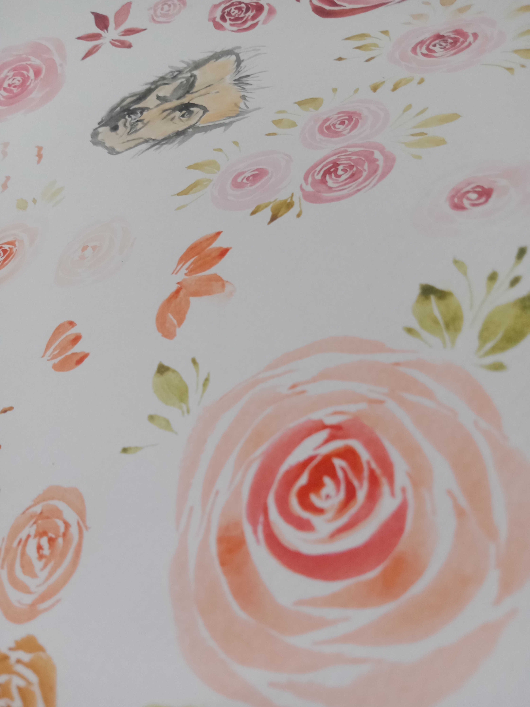
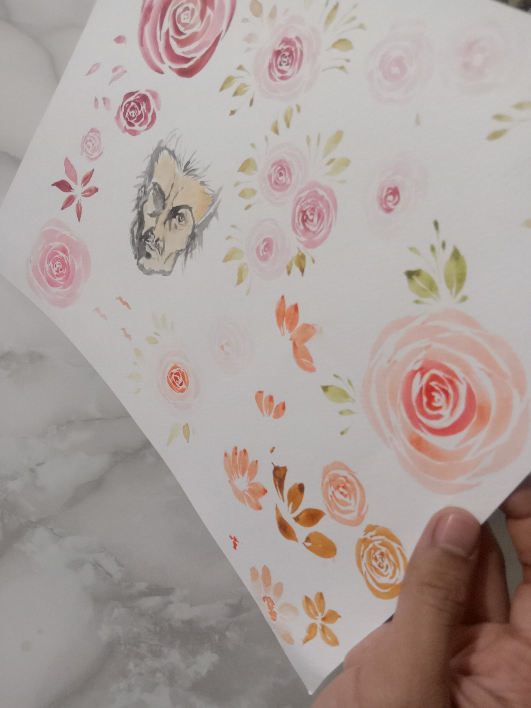
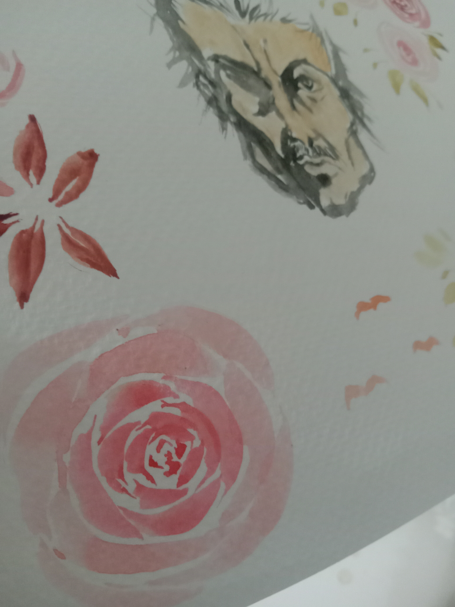
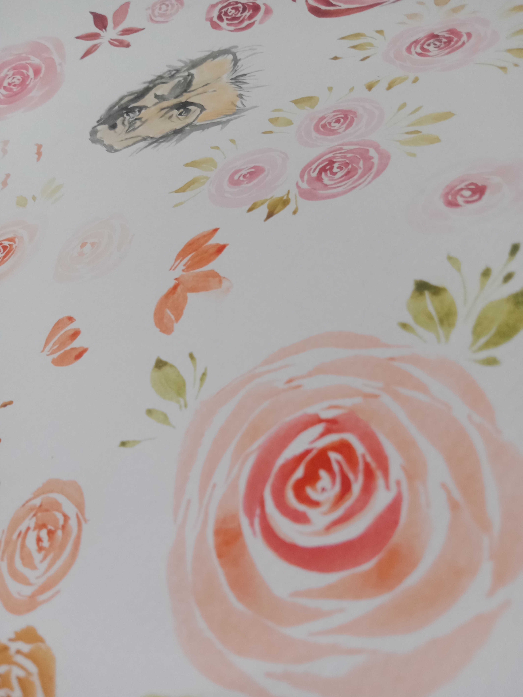
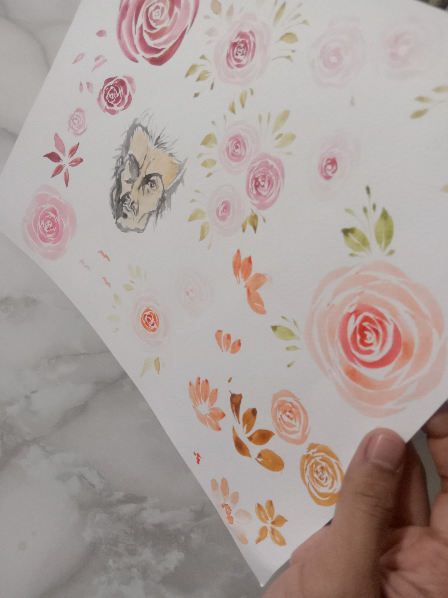
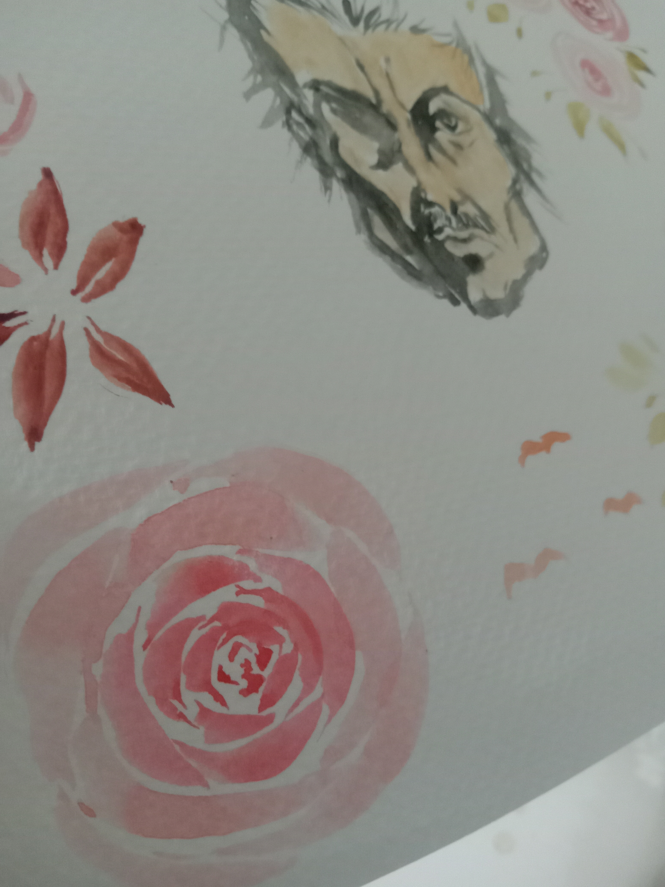

Description: An abstract representation of Miyamoto's mind during his prime years. Miyamoto Musashi is one of the legendary figures in Japanese History and is said to be the strongest swordsman of his time. He was also a philosopher and wrote many books including his most famous work, "The book of five rings". During his prime, he realized the importance of growth and how it connects to strength and spirit. The rose symbolizes growth. How one's spirit can blossom into a magnificent wonder. In this art piece of mine, I decided to take inspiration from postmodernist artists like Jackson Pollock and Picasso while incorporating styles of my own. I wanted it to be abstract but not totally to the point that it is hard to recognize or unrecognizable at all. In the lower left side of the center of the piece, I decided to put Musashi's face there mainly to achieve that abstract effect. I wanted the piece to look like something a citizen in feudal japan would see in one of his dreams. The blank background represents most of the Japanese paintings of the time having blank, undetailed backgrounds while the colors of the rose are inspired by the works of Picasso and Pollock. Truly, I wanted this piece to be like a combination of the eastern and western abstract art. Musashi's stoic face and the blossoming roses and the floating petals are nothing but the illustration of our inability to fully comprehend what is happening in the mind, of how it all comes up, but we do know that these imaginations of ours, these abstract thoughts can be focused and through focus, we can realize these dreams and thoughts. I would like to think that this piece illustrates the abstract thought of Musashi on growth during one of his many, many meditations